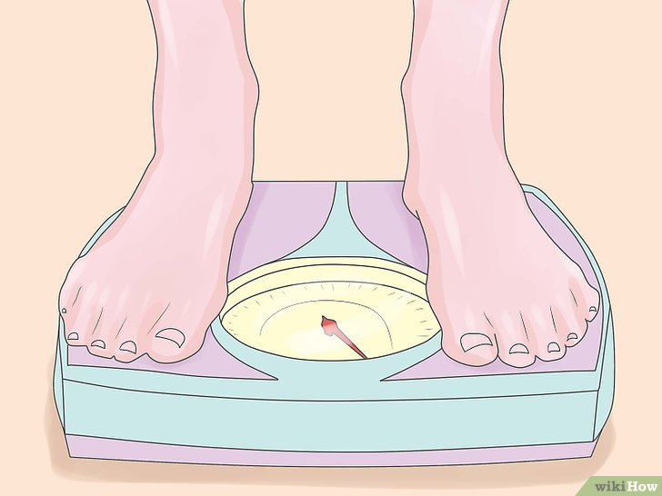

BMR สำหรับผู้ชาย

น้ำหนัก
ส่วนสูง
อายุ
BMR สำหรับผู้ชาย ของคุณคือ {{ bmrman }}
ออกกำลังกายน้อยมากหรือไม่ออกเลย ของคุณคือ {{ tdee1 }}
ออกกำลังกาย 1 - 3 ครั้งต่อสัปดาห์ ของคุณคือ {{ tdee2 }}
ออกกำลังกาย 4 - 5 ครั้งต่อสัปดาห์ ของคุณคือ {{ tdee3 }}
ออกกำลังกาย 6 - 7 ครั้งต่อสัปดาห์ ของคุณคือ {{ tdee4 }}
ออกกำลังกายวันละ 2 ครั้งขึ้นไป ของคุณคือ {{ tdee5 }}